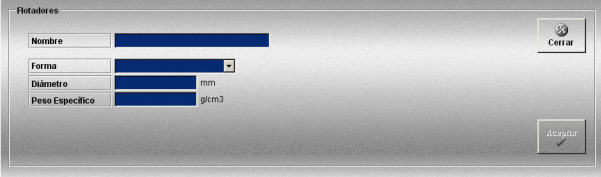

Flotadores
La creación y edición de flotadores se realiza mediante la siguiente ventana.

Esta ventana permite definir los flotadores que podrán ser añadidos a los artes de arrastre definidos.
Se definen los siguientes datos:
Nombre: Nombre del flotador.
Formato: caracteres alfanuméricos.
Forma: Permite especificar distintos tipos de flotadores. Puede tomar los siguientes valores.
Diámetro: descripción.
Unidades: milímetro
Rango: 0.00- 60.00
Peso Específico: descripción.
Unidades: gramos/cm3
Rango: 0.00- 300.00